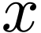

7. 已知函数，则图像为如图的函数可能是
|
|
2021年浙江省高考数学选择题第七题如下所示：
7. 已知函数，则图像为如图的函数可能是
|
本文将从如何绘制 开始讲解如何绘制题目中的选项D。
开始讲解如何绘制题目中的选项D。
本文使用
在墨干编辑器中，使用
gnuplot 5.4 patchlevel 2
gnuplot] |
gnuplot] |
% -width 0.618par plot sin(x) |
gnuplot] |
不做任何配置，直接绘制，默认的图像不够友好。
我们来逐步调整一下。首先将上图的边框换成我们熟悉的坐标轴：
gnuplot] |
% -width 0.618par unset border set zeroaxis linetype -1 linewidth 2 set xtics axis set ytics axis plot sin(x) |
gnuplot] |
unset border
1. http://gnuplot.info/docs_5.5/loc9713.html
2. http://gnuplot.info/docs_5.5/loc16801.html
通过上面四行配置，我们得到一个在中学教育中经常使用到的函数曲线图像。
可以再做一些调整，让这个图像更加美观一些：
gnuplot] |
% -width 0.618par unset border set zeroaxis linetype -1 linewidth 2 set xtics axis set ytics axis set xtics pi set ytics 1 set arrow from 0,0 to 10,0 set arrow from 0,0 to 0,1.5 plot [-10:10][-1.5:1.5] sin(x) linecolor rgb "black" |
gnuplot] |
接下来新增的四行，我们配置了轴的刻度单位是 ，
， 轴的刻度单位是1，然后绘制了两个箭头。在最后的plot命令中，设置了定义域为，值域为，最后把曲线颜色调整成了黑色。
轴的刻度单位是1，然后绘制了两个箭头。在最后的plot命令中，设置了定义域为，值域为，最后把曲线颜色调整成了黑色。
通过以上配置，我们得到一个在中学教育中经常使用的函数曲线图像。
我们选中上一个小节中的代码片段，使用右键菜单复制，然后使用右键菜单粘贴到下面的会话中。修改plot命令里面的函数，就可以绘制选项D的曲线（在这个例子中，我们稍稍调整一下刻度、定义域、值域以更加清楚地展示曲线的性质）：
gnuplot] |
% -width 0.8par unset border set zeroaxis linetype -1 linewidth 2 set xtics axis set ytics axis set xtics pi set ytics 0.5 set arrow from 0,0 to 15,0 set arrow from 0,0 to 0,1.2 plot [-15:15][-1.2:1.2] (sin(x)/(x*x+1/4)) \ linecolor rgb "red" linewidth 1.5 |
gnuplot] |
也可以在同一个段落里面绘制两个曲线，如下所示：
gnuplot] |
% -width 0.8par unset border set zeroaxis linetype -1 linewidth 2 set xtics axis set ytics axis set xtics pi set ytics 0.5 set arrow from 0,0 to 15,0 set arrow from 0,0 to 0,1.2 plot [-15:15][-1.2:1.2] \ (sin(x)/(x*x+1/4)) linecolor rgb "red" linewidth 1.5, \ sin(x) linecolor rgb "blue" |
gnuplot] |